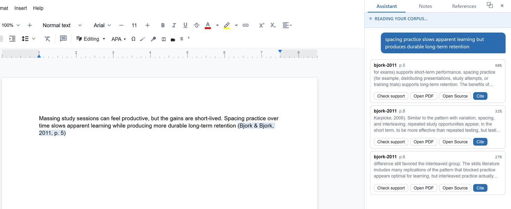
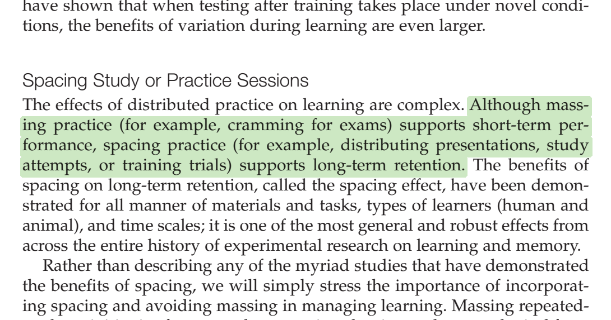

Draft with a local AI model, cite passages from PDFs you already own, and click any citation to open the exact page it came from. Runs on your machine. The free tier needs no account. Windows.

Click any citation and Vivascri opens the exact page it came from, a passage in a PDF you already own. No web lookup. No upload. Checked on your machine.
“Desirable difficulties such as spacing and retrieval practice slow apparent learning but improve long-term retention (Bjork & Bjork, 2011, p. 5).”

Citations are generated from your PDFs and pinned to the page. No hallucinated references. Proof you can open.
Local and offline by default. Your drafts and your library never leave your computer. There's no account and nothing to phone home.
A real word processor and your own files. Free to use with no account, and your work exports clean to the formats you already rely on.
Drop in the PDFs you already own: papers, books, notes. They stay on your disk.
Draft in a real editor, with an AI model running locally to help you think and phrase.
Every claim links to an exact page you can open and verify. Grounded, not guessed.
Export clean documents and citations. Nothing was uploaded; nothing phones home.
Styles, headings, footnotes, and clean export to Word (.docx) with your reference list. Not a toy chat box.
Pinned to the exact page in your own PDFs, in APA, MLA, Chicago, or Harvard, so every reference is verifiable at a click.
A model runs on your machine to help draft and revise. No data sent anywhere.
No account, no telemetry, no upload. The free app works with your Wi-Fi off.
Build your library your way: drop in PDFs you own, or paste a DOI, arXiv link, or URL and Vivascri pulls a clean open-access copy. Every citation is grounded in that local library, pinned to the page.
Sharper neural retrieval and priority support as optional upgrades, layered on the free offline core.
Vivascri is built local-first. The app you download needs no account and sends nothing. The only network calls are ones you start yourself, like fetching a model or adding a paper by link, plus a licence check for paid tiers.
Write essays and theses with citations you can defend, and keep your drafts to yourself.
Draft from your own paper library, with every reference pinned to the page it came from.
Anyone working from sources who wants accuracy, ownership, and privacy in one place.
Download the free app for Windows. No account, nothing uploaded. Start writing offline in a minute.
Version 1.1.0 for Windows 10/11 (64-bit), about 80 MB, portable: no installer. Not yet code-signed, so if Windows SmartScreen appears choose "More info", then "Run anyway". A black console window opens with the app; closing that window quits. On first launch it fetches a small AI model (about 1 GB, once). Writing and keyword search work even before that finishes.